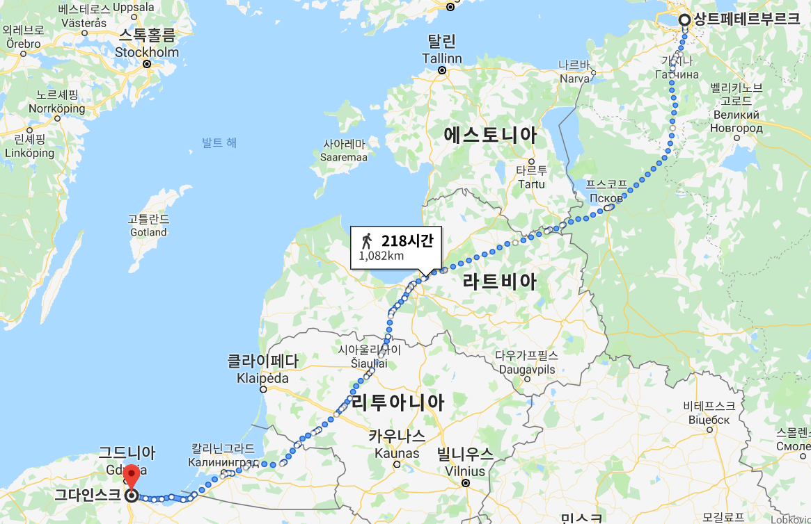
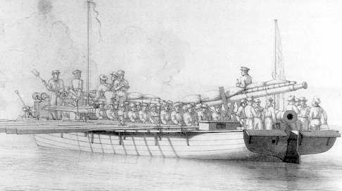
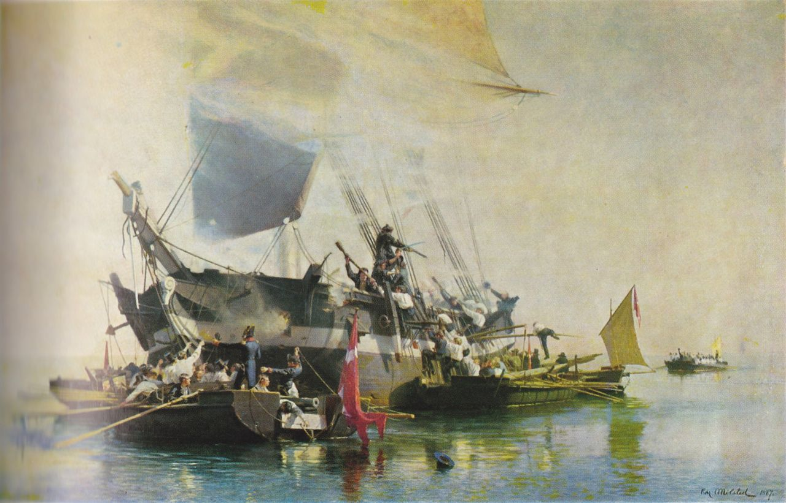

번외편) 1812년 - 해로를 통한 원정은 어땠을까 ?
게시: 2019-08-15T06:30:38+09:00
오늘은 번외편으로, 1812년 러시아 원정 실패 원인 중 하나로 '원인'님께서 작성해주신 아래 댓글과 함께 거기에 대한 제 짧은 의견을 덧붙이겠습니다. 이 글은 절대 '원인'님 생각이 틀렸고 제 생각이 맞다는 내용이 아니며, 그냥 저는 이렇게 생각한다는 이야기일 뿐이라는 점을 먼저 유의해주시기 바랍니다. '원인'님께서 작성해주신 글 중 핵심 부분은 아래 부분입니다. 다부의 작전은 발틱해의 해상운송을 통해서 리보니아에 거점을 만들고 그 리보니아로부터 상트뻬쩨르부르크와 모스크바를 공격하는 것인데, 나폴레옹이 다부의 건의를 무시하고 바로 육로직공을 선택한 것이 러시아 원정의 패배원인 중 하나입니다. 여기에 대해 몇몇 분이 영국 해군은 그냥 보고만 있었겠느냐는 댓글을 다셨고, 거기에 대해 다시 '원인'님께서 달아주신 댓글은 아래와 같습니다. 리보니아 해상운송은 복잡한 발틱해 연안을 따라서 항해하는 것이지 넓은 바다를 가로지르는 항해가 아닙니다. 그걸 먼저 염두에 두셔야죠. 연안항해를 함으로서 영국해군의 능숙한 기동능력이 상대적으로 위력을 발휘하지 못하는 상황에서 제한적으로만 움직이는 게 전제조건입니다. 또한 이 지역은 30년 전쟁때부터 이미 무수한 스웨덴 해군력의 침공으로 그 방비에 이골이 난 지역이고 해안지역에는 요새와 해안포로 무장한 도시들이 즐비하게 늘어서 있죠. 슈트랄준트 같은 것은 단지 그 하나에 불과합니다. 이 환경에서 최대한 해안에 바짝 붙어서 요새와 해안포의 엄호를 받으면서 연안항해를 할 경우에 독일,폴란드 지역에서는 영국해군이라도 그렇게 쉽게 공격하기는 어려울 겁니다. 문제가 되는 발틱해 동쪽의 리보니아쪽은 경제력이 약하고 해안 방비가 잘 안 된 지역이므로 이 쪽이 약점이긴 한데, 그래서 제가 썼듯이 해안항해 + 해안육로행군을 병행해야 할 겁니다. 아마도 리투아니아 가까운 지역부터는 육상보급의 비중이 높아질 가능성이 높지만 러시아 내륙을 가르지르는 무모한 경로와는 비교가 안 될 정도로 안전하죠. 여기에 대해서 저는 일단 다부가 해상 운송에 의존하여 리보니아(Livonia), 즉 지금의 에스토니아와 라트비아 지역을 공격하고 거기로부터 상트페테르부르크를 공격하자는 의견을 냈다는 이야기는 모르고 있었습니다. (이건 그런 사실이 없었다는 이야기가 아니라, 제가 몰랐다는 이야기입니다.) 혹시 원인님께서 이 글을 보신다면 그런 이야기가 어디에 나오는지 알려주시면 고맙겠습니다. 혹시 다부가 그런 의견을 개진한 것이 사실이라고 해도, 저는 그것이 바다 경험이 없는 뭍사람인 다부가 뭘 잘 몰라서 내놓은 의견이라고 생각합니다. 그리고 나폴레옹이 다부의 수륙 병진 작전 계획안을 거부한 것은 이집트에 직접 상륙해보고 또 영국 침공 작전을 끝까지 추진해본 경험이 있는 사람으로서 당연한 일이었다고 생각합니다. 1. 육상부대가 해안가를 따라 행군하고, 그와 발맞추어 연안에 바짝 붙어 항해하는 수송선단으로부터 보급을 받으면 보급 문제는 쉽게 해결되지 않겠는가 ? 바다는 인간의 사정을 봐주지 않기 때문에 바람의 방향이나 파도의 세기가 제멋대로 변할 수 있으므로, 수송선단이 육상부대와 연락을 유지하며 병진한다는 것은 사실상 불가능합니다. 2. 육상부대와 항상 병진하지 않는다고 해도, 중간중간 적절한 지점에서 랑데부하여 보급품을 하역받으면 되지 않겠는가 ? 접안 시설이 없는 해변이나 작은 어촌 등에 보급품을 내려놓는데는 시간이 너무 오래 걸렸습니다. 말먹이를 빼고도 20만 대군은 하루에 200톤씩의 보급품이 필요했는데, 한번에 1주일치 씩만 보급을 받는다고 해도 1400톤의 물자를 론치(launch) 보트 등의 대형 보트를 이용해 하역해야 합니다. 론치 보트에 3톤의 짐을 실을 수 있다고 가정해도, 1400톤을 내려놓으려면 배와 해안 사이를 467회 왕복을 해야 했습니다. 20척의 수송선단에서 40척의 론치 보트를 이용해서 하역을 한다고 해도, 보트 1척당 12회 왕복해야 합니다. 파도가 치는 바다에서 수송선 선창에 들어있던 3톤의 짐을 보트에 내려놓고, 그걸 다시 해안까지 300~400m를 노를 저어간 뒤 다시 모래톱 해안에 내려놓으려면 2시간은 걸렸을 것 같습니다. 하루 종일 24시간 쉬지 않고 일해야 가능한 일이었습니다. 이렇게 20척이라는 꽤 큼직한 선단이 하루 종일 정지 상태로 해안 근처에 닻을 내리고 있다면 영국 해군이 그걸 가만히 내버려 두었겠습니까 ? 더 큰 문제는 상트페테르부르크까지 1200km가 넘는 항로에 걸쳐서, 이 짓거리를 7번 이상 해야 한다는 것입니다.

3. 수십 척으로 구성된 대형 선단 대신, 개별적으로 연안을 따라 항해하는 수송선을 하루에 2~3척씩 끊임없이 내보내면 영국 해군의 봉쇄망을 뚫을 수 있지 않겠는가 ? 영국 해군에는 74문짜리 전열함(ship of the line)이나 28문짜리 프리깃(frigate)함만 있는 것이 아니라 슬룹(sloop)함, 브릭(brig)함, 커터(cutter)함 등 다수의 소형 함선도 잔뜩 거드리고 있었습니다. 이런 소형 함선의 주임무가 적국의 연안을 감시하면서 그런 화물선을 나포하는 일이었습니다. 단치히 항구에 프랑스군이 백여 척의 수송선을 모은다는 소식, 그리고 프랑스군이 해안선 쪽으로 집결한다는 소식은 반드시 간첩 등을 통해 영국 해군에게 알려질 수 밖에 없었습니다. 그럴 경우 영국 해군은 당연히 단치히 항구 근처에 그런 소형 함선으로 레이드 파티를 짜놓고 군침을 흘리며 기다리고 있었을 것입니다. 4. 해안가에 기마 포병대를 다수 포진시켜 연안을 따라 항해하는 수송선을 지원하게 하면 영국 해군 소형함 정도는 저지할 수 있지 않겠는가 ? 기마 포병대가 수송선을 따라 해안선을 이동해가며 호위해주는 것은 애초에 도로 사정 때문에 불가능했습니다. 기마 포병대가 원활히 이동할 도로가 해안선을 따라 존재한다면, 애초에 굳이 수송선을 띄울 필요없이 그냥 그 도로를 따라 보병대와 치중대를 이동시키면 될 겁니다. 그리고 당시 포병 기술로는 수백 m 떨어진 바다에 떠있는 소형 함선을 명중시키는 것이 쉽지 않았고, 명중시킨다고 해도 당시 기마 포병대가 사용한 8파운드 포 정도로는 소형 함선조차 제압하기가 쉽지 않았습니다. 당시 영국 해군은 뛰어난 속도로 적함에 근접하여 대포를 쏘았기 때문에 적의 군함이나 수송선을 제압할 수 있었던 것이지 원거리 포격으로 적의 항복을 받아낸 것이 아니었습니다. 5. 어쨌거나 해안선 가까이에 바짝 붙어서 항해한다면 영국 해군을 겁낼 필요는 없지 않았을까 ?

(1807년 이후 본의 아니게 덴마크 해군의 주력함이 된 대포를 장착한 대형 보트, 즉 포함(gun boat)입니다.)
연안 항해를 한다고 해서 영국 해군으로부터 안전한 것이 아니었습니다. 그 단적인 예가 소위 '포함 전쟁'(Gunboat War)이었습니다. 영국 해군은 1807년의 제2차 코펜하겐 전투 이후, 덴마크와 '포함 전쟁'을 계속 벌이고 있었습니다. 그런 일련의 소규모 해전은 1807년 영국에게 당한 이후 대형 함정을 모두 잃은 덴마크 해군이 탑승 인원수 70~80명 정도의 대형 포함(gunboat)를 대량으로 만들어 영국 해군 소속의 브릭(brig)함이나 커터(cutter)함 등 소형 함정들과 싸웠기 때문에 벌어진 것입니다. 이런 전투 중 일부는 거포로 중무장된 해안 요새의 사정거리 안쪽에서 벌어졌는데, 그런 와중에도 영국 해군은 꽤 짭짤한 전과를 올렸습니다. 가령 스완(Swan)이라는 이름의 커터함은 원래 정규 영국 해군함정이 아니라 민간에서 임대한, 소위 HMH(His Majesty's Hired) 무장 커터함(armed cutter)이었습니다. 이 배는 12문의 4파운드 포와 2문의 9파운드 캐로네이드 포(carronade, 사정거리가 짧은 대구경 저압포)를 갖춘 배수향 약 130톤 가량의 소형함이었습니다. 스완 호는 1808년 5월 24일 덴마크 보른헬름(Bornholm) 섬 인근에서 덴마크 해군의 130톤짜리 커터 사략선 하벳(Habet) 호와 대결을 벌었는데, 이때 스완 호는 하벳 호 뿐만 아니라 보른헬름 섬의 해안포들로부터도 맹렬한 사격을 받았습니다. 그러나 결과는 영국 해군의 일방적 승리였습니다. 하벳 호가 폭발과 함께 침몰한 것에 비해, 스완 호는 부상자 한 명 내지 않았습니다. 1809년 8월 12일에는 영국 해군 브릭함인 멍키(HMS Monkey) 호와 대형 론치 보트가 덴마크 무장 소형선박들 3척이 수심이 얕은 해안에 얼쩡거리는 것을 것을 습격했습니다. 덴마크 무장 선박들은 아예 배를 모래 해안에 좌초시키며 육지로 탈출했고, 영국 해군은 3척을 모두 나포했습니다.

(물론 반대로 영국 브릭함이 다수의 덴마크 포함들에게 다구리(?)를 당하는 경우도 종종 있었습니다. 물론 위의 그림은 덴마크 측에서 그린 것이지요.)
Source : https://en.wikipedia.org/wiki/Gunboat_War https://en.wikipedia.org/wiki/Hired_armed_cutter_Swan#The_second_Swan